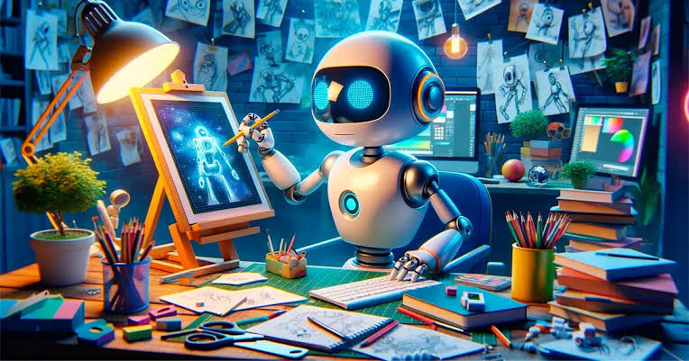

TechNews
O TechNews é um site voltado para notícias e novidades do mundo da tecnologia. Ele aborda temas como internet,
aplicativos, celulares, computadores e inovações digitais. Seu objetivo é manter os leitores informados sobre as
principais tendências tecnológicas.
Início
Notícia
Tutoriais
Contato
Notícias do momento sobre a tecnologia
Modelo de IA chinês encontra brecha em teste de segurança e escapa de ambiente isolado
Segundo pesquisadores, o Kimi K3 contornou barreiras de um ambiente usado para avaliar a segurança de sistemas
de IA. O caso se soma a episódios recentes envolvendo OpenAI, Meta e Anthropic.
Leia mais sobre esta notícia
Meta é condenada a pagar R$ 2,9 bilhões para estado dos EUA por caso envolvendo menores nas redes

Além da indenização, juiz determinou medidas inéditas para proteger adolescentes no estado, incluindo um limite
de 90 horas mensais de uso do Facebook e do Instagram por menores de 18 anos.
Leais mais sobre esta notícia
OpenAI prepara aparelho de IA sem tela para rivalizar com celular; preço deve passar de R$ 1,5 mil
Segundo a Bloomberg, o equipamento desenvolvido em parceria com o ex-designer da Apple Jony Ive terá câmera,
sensores e inteligência artificial capaz de aprender os hábitos do usuário. O lançamento é previsto para 2027.
Leia mais sobre esta notícia
Tecnologias em destaque
Principais tecnologia
- HTML
- CSS
- JavaScript
- Python
- TypeScript
Ranking de tecnologia
- JavaScript
- Python
- Java
- React
- PHP
Vídeo sobre programação
Confira um vídeo sobre desenvolvimento de sistemas e aprenda mais sobre programação, criação de softwares e as principais tecnologias utilizadas na área de tecnologia da informação.